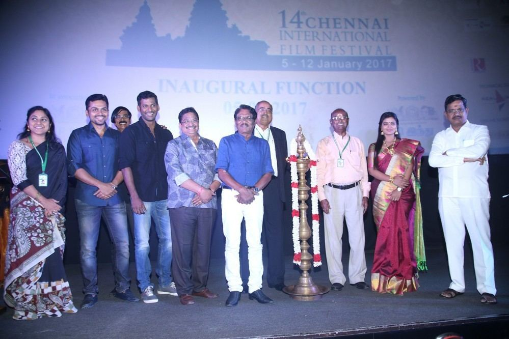

Festivals · Film
24th Chennai International Film Festival (CIFF 2026)
- Dates
- Dates TBA
- Location
- Chennai, India
- Format
- In-person
- Category
- Film
- Industry
- Film
- Organiser
- Indo Cine Appreciation Foundation
- Official website
- https://chennaifilmfest.com/
About
Topics: world cinema, Tamil cinema.
No organiser attendance figure found on the official pages fetched 24 Nov 2026. Ranked by our estimated size tier 'medium' (10,000-30,000 attendees/visits), a judgement from format, venue and scale, not an official number.
Sources
- Official — https://chennaifilmfest.com/